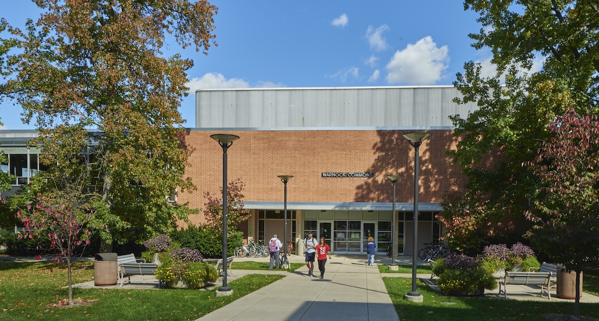

Welcome to the North Dorms!
North Dorms is the smallest housing complex on campus, housing a total of 1,300 students. Robinson Hall was the newest hall built in North and was finished in 2017. North also houses special living options for Arts and Architecture (A&A), Business and Society House (BASH), Earth House, and LionLaunch Pad
